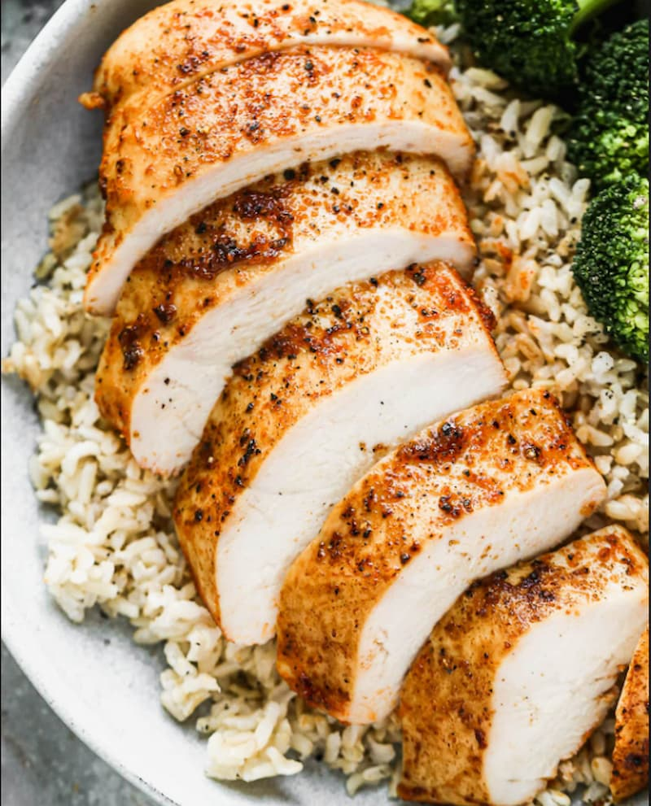

Meal Prep Guide
Why Meal Prep Matters
Meal prepping helps you stay consistent with your nutrition goals, save time, and avoid unhealthy food choices during busy days.
Protein Prep
Cook chicken, eggs, or fish in bulk to ensure you always have muscle-building meals ready.
Carb Prep
Prepare rice, potatoes, or oats ahead of time to support energy and recovery throughout the week.
Storage Tips
Use containers to keep meals fresh and organized so you can grab them quickly each day.
Weekly Plan
Plan your meals every Sunday so you stay on track with your fitness and nutrition goals.
Example Meal Prep Setup
